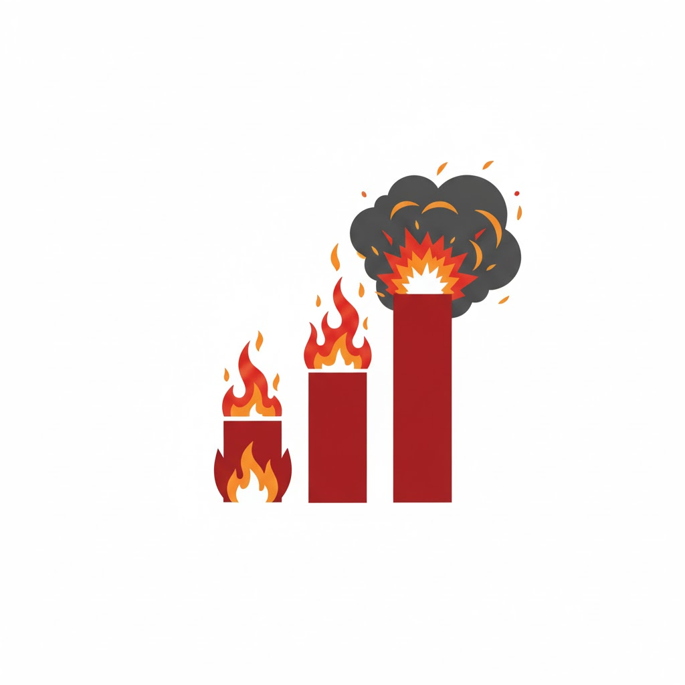

BurningBarrels
Ми спеціалізуємося на вогні!

Наша Аналітика:
- Географія ударів: Українські БПЛА змогли досягти об'єктів на значних відстанях (до 1500-1700 км), охоплюючи європейську частину росії, де розташована більшість НПЗ, зокрема такі великі як "Кіришінефтеоргсинтез" (Ленінградська область), Рязанський, Волгоградський, Новокуйбишевський НПЗ та інші.
- Зниження потужностей: Удари вивели з ладу значну частину потужностей російської нафтопереробки. Агентство Reuters та українська розвідка говорять про виведення з ладу близько 17% потужностей. Пізніші оцінки, зокрема російських аналітичних агенцій, вказують, що через атаки та ремонтні роботи може простоювати до 40% потужностей НПЗ РФ.
- Ураження націлені на ключові та найбільш вразливі технологічні установки – установки первинної переробки нафти (атмосферної дистиляції), які важко і довго ремонтувати, особливо в умовах санкцій, що обмежують доступ до західного обладнання та запчастин.
17%
До 40%
~10%
50% (з початку року)
Зниження потужностей переробки
Максимальний потенційний простій
Падіння виробництва бензину
Зростання оптових цін на бензин у рф
1500–1700 км
Мінімум 16
~3 успішні ураження на тиждень
Дальність ударів (максимальна)
Кількість атакованих НПЗ (на вересень 2025)
Темп ударів (за два місяці)
Інтерв’ю та коментарі експертів:
Агентство Reuters, аналітичний звіт.
“Ми спостерігаємо скорочення експорту бензину та інших нафтопродуктів... Росія втрачає значну частину своїх доходів, а також стикається з ризиком дефіциту пального на внутрішньому ринку, особливо в розпал посівного сезону.”
“Ми спостерігаємо скорочення експорту бензину та інших нафтопродуктів... Росія втрачає значну частину своїх доходів, а також стикається з ризиком дефіциту пального на внутрішньому ринку, особливо в розпал посівного сезону.”

Bloomberg — інформаційне агенство.
“Росія була змушена заборонити експорт бензину, щоб стабілізувати ціни на внутрішньому ринку на тлі зростаючого попиту та скорочення виробництва через аварії на НПЗ.”
“Росія була змушена заборонити експорт бензину, щоб стабілізувати ціни на внутрішньому ринку на тлі зростаючого попиту та скорочення виробництва через аварії на НПЗ.”